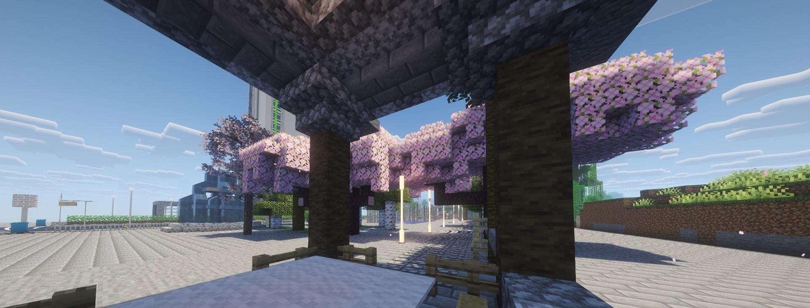

专业MTR服务器运营团队，致力于为玩家提供最佳铁路建设体验
采用最新MTR 4.0.2模组，配合fabric Minecraft Java 1.20.4版本，确保最佳游戏体验。
从传统村庄到现代化大都市，多种城市风格任您选择，打造独特的城市景观。
拥有多个活跃玩家社群，定期举办建筑比赛和技术交流活动，共同进步。
我们服务器的高铁线路网络，连接各大城市

我们的服务器建立了完善的高铁网络系统，连接所有主要城市，确保玩家可以快速便捷地穿梭于不同城市之间。
高铁线路采用最新的信号系统和轨道设计，提供高效、安全的交通服务。每个城市都设有现代化的高铁站，与城市交通系统无缝衔接。
我们持续优化线路布局和列车调度，确保整个网络运行顺畅，为玩家提供最佳的铁路交通体验。
欣赏我们服务器中玩家建设的精美铁路和城市景观


官方QQ群: 1070623105
服务器IP: 加入群后整合包自带服务器
服务器在线时间: 24/7
技术支持: 群内管理员
扫描二维码加入QQ群